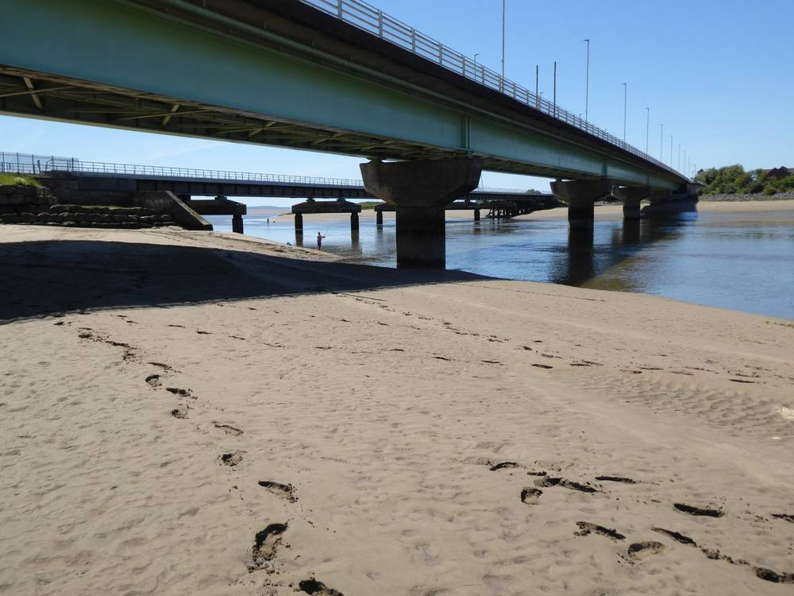

영국 웨일스 스완지시, 농촌 공동체 단체 5곳에 재생에너지 설비비 7만6,000파운드 넘게 지원…럭비클럽·교회·스카우트·공동체의회 회관

러허 럭비클럽 클럽하우스 태양광·배터리에 2만4,216파운드로 최대…교회 히트펌프 3대, 클라이다크 자원센터 패널 32장, 스카우트 LED 조명, 스리 크로시스 회관 충전기 — 예산 남아 추가 신청 받아
영국 웨일스의 스완지시가 농촌 지역 공동체 단체 5곳에 건물용 재생에너지 설비비로 모두 7만6,000파운드 넘는 돈을 지원했다. 돈은 영국 정부 지역성장기금(UK Local Growth Fund)의 농촌 재생에너지 보조금 프로그램에서 나왔으며, 단체 건물을 더 친환경적이고 운영비가 덜 드는 곳으로 바꾸는 설비에 쓰인다. 가장 많은 2만4,216파운드를 받은 러허 럭비클럽(Loughor RFC 1882)은 클럽하우스에 태양광과 배터리를 다는데, 이 건물은 럭비 말고도 지역 단체와 퇴역군인, 노인 모임, 매주 열리는 푸드뱅크가 함께 쓴다. 옛 학교 건물에서 주당 약 1,300회 방문을 맞는 퐁타르둘레의 본트 엘림 공동체 교회는 히트펌프 3대를 더 놓는 데 1만5,916파운드를, 클라이다크 공동체의회는 포지 바크 자원센터에 태양광 패널 32장과 배터리를 다는 데 1만4,749파운드를, 제4 리우 밸리(퐁타르둘레) 스카우트단은 태양광·배터리·LED 조명에 1만3,382파운드를, 스리 크로시스 공동체의회는 공동체 회관의 전기차 충전기와 배터리 추가에 8,369파운드를 받았다. 앤드루 스티븐스 시 환경·인프라 담당 집행위원은 단체들의 에너지 요금을 줄여 주면 주민에게 정말 중요한 활동과 서비스에 더 많은 돈이 돌아간다고 말했고, 시는 예산이 남아 있어 다른 농촌 공동체 단체의 신청도 받는다고 밝혔다.
시민에너지 관점
2만4,216파운드로 럭비클럽 지붕에 태양광과 배터리를 다는 일은 작아 보이지만, 그 건물에서 퇴역군인 모임과 푸드뱅크가 열린다는 점에서 아낀 전기요금은 곧 마을 복지 예산이 된다. 이 정도 보조금으로 무슨 전환이냐는 시각도 있지만, 설비는 각 단체가 소유하고 해마다 줄어드는 요금이 단체 활동비로 쌓이니 한 번 주고 끝나는 지원과는 성격이 다르다. 마을회관과 체육시설, 종교시설처럼 주민이 모이는 건물이 스스로 전기를 만드는 주인이 될 때 재생에너지는 바깥의 발전 사업이 아니라 공동체 살림의 일부가 된다. 국내에서도 마을회관·경로당·체육시설 지붕에 태양광과 저장장치를 달고 그 소유와 수익을 마을 단체가 갖도록 지자체의 소규모 보조 사업을 넓혀야 한다.
출처: Insider Media 2026-11-05 기자 미표기 원문 보기
英ウェールズ・スウォンジー市、農村の地域団体5カ所に再エネ設備費7万6,000ポンド超を支援…ラグビークラブ・教会・スカウト・コミュニティ評議会の会館
ラフアRFCのクラブハウスの太陽光・蓄電池に最多の2万4,216ポンド…教会にヒートポンプ3台、クライダックのリソースセンターにパネル32枚、スカウトにLED照明、スリー・クロッシズの会館に充電設備 — 予算が残り追加申請を受付
英ウェールズのスウォンジー市は、農村部の地域団体5カ所に、建物向けの再生可能エネルギー設備費として合わせて7万6,000ポンドを超える資金を支援した。財源は英政府の地域成長基金（UK Local Growth Fund）による農村再エネ補助金プログラムで、団体の建物をより環境にやさしく維持費の安いものにする設備に充てられる。最多の2万4,216ポンドを受けたラフア・ラグビークラブ（Loughor RFC 1882）はクラブハウスに太陽光と蓄電池を設置する予定で、この建物はラグビーだけでなく地域団体や退役軍人、高齢者の集まり、毎週のフードバンクにも使われている。旧校舎で週に約1,300回の来訪を受け入れているポンタルドゥライスのボント・エリム・コミュニティ教会はヒートポンプ3台の追加に1万5,916ポンド、クライダック・コミュニティ評議会はフォージ・ヴァッハ・リソースセンターへの太陽光パネル32枚と蓄電池の設置に1万4,749ポンド、第4リウ・バレー（ポンタルドゥライス）スカウト団は太陽光・蓄電池・LED照明に1万3,382ポンド、スリー・クロッシズ・コミュニティ評議会はコミュニティセンターの電気自動車充電設備と蓄電池の追加に8,369ポンドを受けた。市の環境・インフラ担当閣僚のアンドリュー・スティーブンズ議員は、団体のエネルギー料金を減らせば住民にとって本当に大切な活動やサービスにより多くの資金を回せると述べ、市は予算が残っているため他の農村地域団体の申請も受け付けるとした。
市民エネルギーの視点
2万4,216ポンドでラグビークラブの屋根に太陽光と蓄電池を付けることは小さく見えるが、その建物で退役軍人の集まりやフードバンクが開かれていることを考えれば、浮いた電気代はそのまま地域の福祉予算になる。この程度の補助金で何が転換かという見方もあるが、設備は各団体が所有し、毎年減る料金が団体の活動費として積み上がるのだから、一度配って終わる支援とは性格が違う。集会所や体育施設、宗教施設のように住民が集まる建物が自ら電気をつくる持ち主になってこそ、再エネは外部の発電事業ではなく地域の暮らしの一部になる。韓国でも集会所・敬老堂・体育施設の屋根に太陽光と蓄電設備を付け、その所有と収益を地域団体が持てるよう、自治体の小規模補助事業を広げるべきだ。
出典: Insider Media 2026-11-05 記者名なし 原文を読む
英国威尔士斯旺西市向五个农村社区团体资助逾7.6万英镑可再生能源设备费…橄榄球俱乐部、教会、童军和社区议会会馆
拉霍尔橄榄球俱乐部会所光伏和电池获最高24,216英镑…教会增设3台热泵、克莱达克资源中心装32块光伏板、童军装LED照明、斯里克罗西斯会馆装充电桩 — 预算尚有余额继续受理申请
英国威尔士斯旺西市向农村地区的五个社区团体资助了总计逾7.6万英镑，用于建筑物的可再生能源设备。资金来自英国政府地方增长基金（UK Local Growth Fund）的农村可再生能源补助计划，用于让团体建筑更环保、运营成本更低。获得最高额24,216英镑的拉霍尔橄榄球俱乐部（Loughor RFC 1882）将在会所安装光伏和电池；这座建筑除了橄榄球，还供社区团体、退伍军人、老年人聚会和每周一次的食物银行使用。在旧校舍里每周接待约1,300人次的庞塔杜莱斯Bont Elim社区教会获得15,916英镑增设3台热泵，克莱达克社区议会获得14,749英镑在Forge Fach资源中心安装32块光伏板和电池，第四利乌谷（庞塔杜莱斯）童军团获得13,382英镑用于光伏、电池和LED照明，斯里克罗西斯社区议会获得8,369英镑为社区中心增设电动汽车充电桩和电池。市政府负责环境与基础设施的内阁成员Andrew Stevens表示，帮团体降低能源账单，就能让更多资金流向对居民真正重要的活动和服务；市政府还表示预算尚有余额，其他农村社区团体也可申请。
市民能源视角
用24,216英镑在橄榄球俱乐部屋顶装上光伏和电池看似不起眼，但这座建筑里有退伍军人聚会和食物银行，省下的电费就直接变成了社区福利预算。有人会问这点补助算什么转型，但设备归各团体所有，每年减少的电费会累积为团体活动经费，这与发一次就结束的补贴性质不同。当村民聚会的会馆、体育设施和宗教场所自己成为发电的主人，可再生能源才不是外来的发电生意，而成为社区生活的一部分。韩国也应扩大地方政府的小额补助项目，在村民会馆、敬老堂和体育设施屋顶安装光伏和储能设备，并让村级团体拥有设备和收益。
来源: Insider Media 2026-11-05 未署名 查看原文
Swansea Council in Wales gives five rural community groups more than £76,000 for renewable energy at a rugby club, church, scout group and community council venues
Loughor RFC's clubhouse solar and battery gets the largest award of £24,216; three heat pumps for a church, 32 panels at Clydach's resource centre, LED lighting for scouts and EV chargers at Three Crosses — funding remains open to more applicants
Swansea Council in Wales has given five rural community organisations a total of more than £76,000 for renewable energy equipment in their buildings. The money comes from the rural renewable energy grant programme of the UK government's Local Growth Fund and pays for installations that make the groups' buildings greener and cheaper to run. Loughor RFC 1882, which received the largest award of £24,216, will fit solar panels and battery storage at its clubhouse, a building used not only for rugby but by community groups, veterans, older residents and a weekly foodbank. Bont Elim Community Church in Pontarddulais, a former school building that sees around 1,300 visits a week, received £15,916 for three more heat pumps; Clydach Community Council £14,749 for 32 solar panels and battery storage at the Forge Fach Resource Centre; the 4th Lliw Valley (Pontarddulais) Scout Group £13,382 for solar panels, battery storage and LED lighting; and Three Crosses Community Council £8,369 for electric-vehicle charging points and extra battery storage at its community centre. Cllr Andrew Stevens, the council's cabinet member for environment and infrastructure, said cutting the groups' energy bills means more money can go to activities and services that matter to residents, and the council said funding remains available for other eligible rural community groups to apply.
Citizen Energy View
Putting solar panels and a battery on a rugby clubhouse for £24,216 may look small, but because the same building hosts veterans' meetings and a foodbank, every pound saved on electricity becomes money for local welfare. Some may ask what kind of transition grants this size can bring, but the equipment belongs to each group and the yearly savings build up as funds for their activities, which makes this different from one-off handouts. When the halls, sports clubs and churches where residents gather become owners that make their own power, renewable energy stops being an outside power business and becomes part of how a community runs. Korean local governments should likewise expand small grant schemes that put solar and storage on village halls, senior centres and sports facilities, with ownership and income kept by village groups.
Source: Insider Media 2026-11-05 No byline Read the original